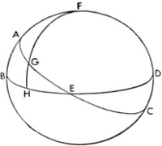

11. Bu Tabloların Kullanımına Dair
Gösterilenlerden hareketle bu tabloların kullanımı da anlaşılır hale geliyor; açılımı Güneş'in bilinen derecesine göre alırsak ve öğlenden itibaren ölçülen her bir eş saat için 15 zamanı eklersek –daha fazlası mevcutsa bütün çemberin 360ºsini eklemeden– açılımların toplamı istenen saatte göğün ortasındaki ekliptiğin derecesini verecektir. Benzer şekilde aynısını siz de bölgenizdeki eğik yükselme için uygularsanız, gündoğumundan ölçülen saat için ekliptiğin yükselen derecesini bulursunuz. Dahası ekliptiğin dışındaki, açılımları belirlenmiş belli yıldızlar için de yukarıda gösterildiği gibi, açılımlar sayesinde Koç'un başlangıcından itibaren onlarla birlikte göğün ortasındaki ekliptiğin dereceleri tabloya göre bulunmuş olur; eğik yükselmeler sayesinde yükselen ekliptiğin derecesi açılımlara ve ekliptiğin bölümlerine göre tablodaki bölgelere uygun hale gelir. Aynı şekilde karşı konum sayesinde hesabı gözden geçirmek de mümkündür. Dahası göğün ortasındaki açılıma göre çemberin bir çeyreği de eklenebilir; yükselen derecenin eğik yükselmesi bize toplamı verir. Yükselen derece göğün ortasındaki derece sayesinde bulunur; ya da tam tersi şekilde. Bunu ekliptiğin yükselen derecesinde ölçülen ufkun ve ekliptiğin açıları tablosu izler; buradan hareketle ufkun yukarısındaki ekliptiğin 90. derecesindeki dikey kesitin ne kadar büyük olduğu anlaşılır ve Güneş tutulmaları için de bunun bilinmesi bilhassa gereklidir.

12. Ufkun Kutupları Boyunca Geçen ve Aynı Ekliptik Çemberini Kesen Çemberlerin Açıları ve Yayları Üzerine
Burada ekliptiğin, –kesişimlerin ufkun üzerinde bir noktada olduğu durumda– ufkun tepe noktasından geçen çemberlerle kesişiminden oluşan açıların ve yayların oranını açıklayacağız. Fakat evvela, meridyen dairesi ufkun tepe noktasından geçen dairelerden biri olduğu için meridyenle kesit açısını ele alarak göğün ortasındaki ekliptiğin herhangi bir açısından ya da Güneş'in meridyen yüksekliğinden bahsedeceğiz. Zaten yükselen burcun açısıyla, yükselen ekliptiğin ve ufkun tepe noktasından geçen büyük bir çember tarafından kapsanan bütünler açıdan bahsetmiştik. O halde geriye ele alınacak ufuk, ekliptiğin yarım çemberleri ve meridyen dairesinin orta kısımları kaldı. Yukarıdaki şekli tekrar çizelim: G, gün ortası ile doğuş ya da batış noktası arasında ekliptikteki herhangi bir nokta olarak alınsın. Bir dairenin bir çeyreği ufkun F kutbundan G boyunca insin. AGE saati, meridyen ile ufuk arasındaki ekliptiğin tüm yayı olarak verilirken, hipotez sayesinde AG de elde edilir.
Benzer şekilde AB meridyen yüksekliği, FAG meridyen açısı ve buna bağlı olarak AF elde edilir. Küresel üçgenlerle ilgili olarak gösterildiği gibi FG yayı da bulunur. Buradan hareketle G'nin yüksekliği de bulunur; zira GH, FG'nin 90ºden farkına eşittir. Ve FAG meridyen açısı elde edilir; bütün bunlar bizim aradıklarımızdır. Açılarla ve ekliptikteki kesişimlerle ilgili olarak Ptolemaeus'tan bu verileri alırken, kendimizi de küresel üçgenlerin geometrisine yönlendirmiş oluyoruz; birisi bu çalışmayı ayrıntılı olarak sürdürmek isterse, bizim verdiğimiz örneklerden çok daha yararlı olanları kendi başına da bulabilir.
13. Yıldızların Doğuşu ve Batışına Dair
Her ne kadar görünümleri yıllık devinimden etkileniyorsa da, sadece bahsettiğimiz yıldızların olağan doğuşunun ve batışının değil, aynı zamanda sabah ve akşamları beliren yıldızların doğuşunun ve batışının da günlük devinimle alakalı olduğu görülüyor; işte burada onlardan bahsetmek yerinde olacak. Eski matematikçiler hakiki doğuş ve batışları zahirilerden ayırmıştır. Yıldızın Güneş'le aynı anda doğuşu, yani yıldızın sabah doğuşu hakikidir; yine yıldızın gün doğumuyla birlikte batışı da hakikidir; zira sabahın, bu zaman diliminin ortasında belirdiği söylenir. Fakat gün batışıyla birlikte yıldızın doğuşu, yani akşam doğuşu da hakikidir; yine yıldızın Güneş'le aynı zamanda batışı, yani akşam batışı da hakikidir; zira akşamın bu zaman diliminin orta noktasında belirdiği söylenir, yani başlayan zamanla gecenin bittiği zaman arasında. Fakat bir yıldızın sabah yükselişi gün doğumundan evvel, alacakaranlıktaki ilk doğuşuyla başlar ve yıldız seçilebilecek hale gelirse bu zahiridir; sabah batışı da yıldızın Güneş'in doğuşundan çok önce battığı görülürse zahiridir. Yıldızın ilk kez akşamleyin doğduğu görüldüğünde akşam doğuşu zahiridir ve yıldızın akşam batışı, yıldız Güneş'in batışından sonra görünmez hale gelirse zahiridir. Ve yıldız sabah doğuşundaki durumuna geri gelinceye değin, Güneş'in yaklaşmasından ötürü karanlıkta kalır. Bunlar sabit yıldızlar için ve gezici yıldızlardan Satürn, Jüpiter ve Mars için de geçerlidir. Fakat Venüs ve Merkür başka türlü doğup batar; diğerleri gibi ne Güneş'in yaklaşmasından dolayı karanlıkta kalır, ne de uzaklaşmasından dolayı yeniden belirir. Ancak yine de öne geçerek Güneş'in parlaklığına karışır ve kendilerini gözden kaçırırlar. Daha yukarıdakilerin[106] bir akşam doğuşu, bir de sabah batışı vardır; ışıklarıyla geceyi geçirmelerine mâni olacak şekilde hiçbir vakitte gözden kaybolmazlar. Buna karşılık diğerleri[107] Güneş'in doğumundan batımına farksız şekilde gizli kalır ve herhangi bir noktada görülmez. Burada şöyle bir ayrım söz konusudur: Daha yüksekte bulunan gezegenler için Güneş'in sabahki hakiki doğuşu ve batışı zahiriden önce, akşamki hakiki doğuşu ve batışıysa zahiriden sonra gerçekleşir; zira bunlar sabah Güneş'ten önce belirir, akşamsa Güneş'ten sonra batarlar. Fakat daha aşağıdaki gezegenlerde zahiri sabah ve akşam doğuşları hakiki olanlardan sonra; zahiri batışlarsa hakiki olanlardan önce gerçekleşir. Bu durumda bilinen bir konumdaki bir yıldızın eğik yükselmesini anlattığımız yukarıdaki bölümden doğuşların ve batışların nasıl ayırt edilebileceği; yıldızın, ekliptiğin hangi derecesinde doğduğu veya battığı ve Güneş görünür olduğunda, hangi karşı derecede yıldızın hakiki sabah veya akşam doğuşu ya da batışının gerçekleştiği öğrenilebilir. Zahiri doğuşlar ve batışlar, yıldızın parlaklığı ve büyüklüğüne göre hakiki olanlardan ayrılır; buna göre daha kuvvetli ışık saçan yıldızlar, Güneş ışınları yanında daha az parlak olan yıldızlardan daha az donuklaşır. Kayboluşun ve belirişin sınırları, aşağı yarım kürede, Güneş ve ufuk arasında, ufkun kutuplarından geçen çemberlerin yaylarında belirlenir. Sınırlar birincil yıldızlar için 12º; Satürn için 11º, Jüpiter için 10º, Mars için 11,5º, Venüs için 5º ve Merkür için 10ºdir. Fakat gün ışığının yerini geceye bıraktığı tanı ya da şafağı kapsayan tüm dönem boyunca dile getirdiğimiz çemberin sınırı ise 18ºdir. Güneş bu derecelerin aksi yönünde seyir halindeyken, daha küçük olan yıldızlar da görünmeye başlar. Bu açıklık sayesinde matematikçiler aşağı yarım kürede, ufkun altında bir paralel belirleyerek Güneş'in bu paralele yaklaşmasıyla günün bittiğini ve gecenin başladığını söylemiştir. Buna göre yıldızın ekliptiğin hangi derecesinde doğduğunu ve battığını; ufkun ekliptik kesitinin hangi derecesine denk geldiğini öğrendiğimiz ve doğuş derecesiyle Güneş arasındaki ekliptiğin birçok derecesinin, Güneş'e, söz konusu yıldızın belirlenen sınırlara uygun olarak ufkun altında bir yükseklik sağlayabilecek kadar olduğunu bulduğumuz zaman yıldızın ilk belirişinin veya yok oluşunun gerçekleştiğini söyleyebiliriz. Fakat Dünya'nın üzerindeki Güneş'in yüksekliğine dair evvelki açıklamamızdaki yorumumuz, Dünya'nın aşağısına doğru inişiyle her konuda uyumludur. Zira alakalı konumlarda bir farklılık yoktur ve bu nedenle görünen yarım kürede batan bu yıldızlar görünmeyen yarım kürede doğmuş olur; her şey birbirinin tam tersi şekilde gerçekleşir, anlaşılması da kolaydır. Yıldızların doğuşu ve batışıyla birlikte yerkürenin günlük devinimiyle ilgili söylediklerimiz de bu kadarla sınırlıdır.
14. Yıldızların Konumlarının İncelenmesi ve Sabit Yıldızlar Kataloğuna Dair
Yerkürenin günlük deviniminden ve açıkladığımız sonuçlarından sonra şimdi de yıllık devinimle ilgili açımlamalara geçmemiz gerekir. Eski matematikçilerden bazıları gezici olmayan yıldızlara ait fenomenlerin, bu ilmin temel noktalarıymışçasına öncelikli olduğunu düşündüğünden biz de bu düşünceye uygun davrandık; zira ilkelerle hipotezlerimiz arasında bütün gezegenlerin eşit olarak referans aldığı gezici olmayan yıldızlar küresinin tümüyle hareketsiz olduğunu da kabul ettik. Her ne kadar Ptolemaeus büyük eserinde Güneş'in ve Ay'ın konumlarına dair bir bilgi önceden verilmedikçe sabit yıldızlarla ilgili bir izahın yapılamayacağı düşüncesini savunsa da ve sonuçta sabit yıldızlar konusunu erteleme kararına varmışsa da, kimse bizim bu düzeni izleyecek olmamıza şaşırmamalı. Biz bu görüşün tam tersinin geçerli olduğunu düşünüyoruz. Fakat bu görüş sayesinde Ay'ın ve Güneş'in görünen hareketinin hesaplanabildiğini düşünürseniz, bu görüş büyük ihtimalle olduğu gibi kalır. Geometrici Menelaus, birçok yıldızın konumunu, kavuşumlarıyla Ay'ı ilişkilendiren rakamlardan hareketle bulmuştur. Fakat biz, biraz sonra göstereceğimiz gibi, Güneş'in ve Ay'ın konumlarını dikkatlice inceledikten sonra aletlerin yardımıyla bir yıldızı saptayabilirsek, gerçekten daha iyi bir iş yapmış olacağız. Bir Güneş yılının uzunluğunun sabit yıldızlar olmadan ekinokslar veyahut gündönümleri sayesinde basit bir şekilde belirlenebileceğini düşünen kişilerin yetersiz çabası da bizi dikkatli olmaya çağırıyor; bu hususta onlarla asla uyuşmayacağız; zira başka hiçbir yerde bundan daha büyük bir fikir ayrılığımız yoktur. Kendi döneminde Güneş yılını hesapladıktan sonra; yeri geldiğinde bir hatanın belirebileceğine dair şüphesi olan Ptolemaeus, bu meselenin kesinliğini daha fazla araştırmaları konusunda sonraki kuşakları uyarmıştı. Buna göre, aletlerin hüneri sayesinde Güneş'in ve Ay'ın konumlarını, ilkbahar ekinoksundan veya Dünya'nın başka noktalarından ne kadar uzakta olduklarını belirlemenin bizim için yararlı olduğu görülüyor; bunlar bize daha sonra başka yıldızların araştırılmasında uygun koşulları sağlar; kendileri sayesinde sabit yıldızlar küresini ve onun takımyıldızlarla sarmalanmış görünüşünü gözler önüne serer. Yukarıda bahsedilen aletler sayesinde dönencelerin uzaklığının, ekliptiğin eğiminin ve küredeki eğikliğin ya da ekvator kutbunun yüksekliğinin hesap edilebileceğini öne sürüyoruz. Aynı yolla gün ortasındaki Güneş'in yüksekliğini de saptayabiliriz. Bu yüksekliğin kürenin eğikliğinden farkı, Güneş'in ekvatordan sapmasının ne kadar büyük olduğunu bize gösterecektir. Daha sonra bu yükselim sayesinde Güneş'in gün ortasındaki konumu, gündönümünden ya da ekinokstan ölçüldüğü üzere anlaşılır olacaktır. Bu durumda Güneş'in 24 saatlik süre zarfında, saat başı 2,5'ya denk gelen yaklaşık 1º ilerlediği görülür. Buradan hareketle Güneş'in herhangi bir saatteki konumu kolayca saptanabilir. Fakat Ay ile yıldızların konumlarının incelenmesi için, Ptolemaeus'un astrolabium[108] dediği başka bir düzenek kurulur. Dörtkenarlı kasnaklarıyla iki daire alınsın ve içbükeyle dışbükey yüzeyleri düz kenarlarda dik açıda olsun. Bu kasnaklar her bakımdan eşit, benzer ve kullanması zorluk çıkaracak kadar büyük değil de makul ölçüde olmalı; ayrıca dakikalara ve derecelere bölünebilecek kadar da geniş tutulmalıdır. Enleri ve kalınlıkları en az çapın otuzda biri kadar olmalıdır; bu sayede birbirlerine uyar ve aynı kürenin yüzeyindeymiş gibi dışbükey kenarlara ve başka bir kürenin yüzeyindeki içbükey kenarlara sahip olduklarından dik açıyla birbiriyle birleşirler. Bu durumda dairelerden biri ekliptiğin konumuyla, diğeri de ekvator ile ekliptiğin kutup noktalarından geçen daireyle bağıntılı konumda olmalıdır. Buna göre ekliptiğin dairesi, aletin kapasitesine göre kendi içinde de bölünebilecek kenarları boyunca toplamda 360º eden eşit parçalara bölünür. Diğer dairedeki çeyreklerin ekliptikten hareketle hesaplandığında, üstüne ekliptiğin kutupları da işaretlenmelidir; eğikliğe bu noktalardan çıkarak bir mesafe tayin edildiğinde bu sefer ekvatorun kutupları da işaretlenmelidir. Bu daireler çizildiğinde iki başka daire de ekliptiğin aynı kutupları etrafında hazırlanmalı ve oluşturulmalı: Bu kutup noktalarının etrafında dairelerden biri içe, diğeri dışa doğru hareket eder. Yine bu daireler, düz yüzeyler arasında eşit kalınlıklarda olmalı ve düz yüzeylerin eni de diğerlerininkine eşit olmalıdır; bütün bunlar daha geniş olanın içbükey yüzeyi ekliptiğin dışbükey yüzeyine; daha küçük olanın dışbükey yüzeyi de ekliptiğin içbükey yüzeyine tüm noktalarda değecek şekilde kurulmalıdır. Bunun yanında hiçbirinin devinimine sekte vurulmamalı, aksine meridyen dairesiyle ekliptiği ve diğer daireyi serbestçe, kolayca geçebilmelidir. O halde bu dairelerde ekliptiğe ait kutupların çapa göre karşısına delikler açarak bu deliklerden akslar geçiririz; böylece bu akslar sayesinde daireler birbirine bağlanmış ve taşınmış olur. Dahası, içerideki daire aynı şekilde, 90ºlik tek çeyrek kutuplarda yer almak üzere, 360ºye bölünmeli. Ayrıca içteki dairenin içbükeyine beşinci daire yerleştirilmeli; bu daire aynı düzlemde dönebiliyor ve yüzeyinde çapa göre karşılıklı kanalları, yansıtıcıları veya mercekleri bulunan bir alet taşıyor olmalı ve Güneş ışığı, tıpkı dioptrada olduğu gibi, bu araçlardan geçerek dairenin çapı boyunca çıkabilmeli. En nihayetinde ekvatorun kutup noktalarındaki bağıntılarla kendisine bağlı olduğu bütün astrolabiumu besleyecek ve destekleyecek bir altıncı daire daha düzenlenmeli; bu sonuncu daire, bir sütuna ya da ayağa tutturulmalı ve ufuk düzlemine dik olarak sabitlenmeli. Dahası ekvatorun kutupları, kürenin eğimine uydurulmalı; bu sayede en dıştaki daire bir doğal meridyene benzer bir konumda olacak ve asla yerinden kıpırdamayacaktır. Alet bu şekilde kurulduktan sonra bir yıldızın konumunu belirlemek istediğimizde; akşamları ya da günbatımı yaklaştığında, Ay'ın da görünür olduğu bir anda dıştaki daireyi bahsettiğimiz yöntemlerle Güneş'in o an yer aldığı ekliptik derecesine göre uydurabileceğiz. Ekliptik ile dıştaki dairenin kesişimini, birbirlerinin üzerindeki gölgeleri eşit oluncaya değin, kutup noktalarından geçtikleri Güneş'in kendisine çevirebileceğiz. Böylelikle içteki daireyi de Ay'a doğru çevirebileceğiz; yüzeyine yerleştirilen göz sayesinde aletin ekliptik bölümündeki, Ay'ın aynı düzlem tarafından ikiye bölünmüş ya da tam karşıda görebileceğimiz konumunu işaretleyebileceğiz. Bu, boylamda görülen Ay'ın konumu olacaktır. Gerçekten de bütün cisimler içinde tek başına hem geceyi hem de gündüzü paylaştığından, Ay olmadan yıldızların konumlarını keşfetmenin bir yolu yoktur. O halde akşam vaktinden sonra, konumunu aradığımız yıldız görünür olduğunda, dıştaki daireyi Ay'ın konumuna göre ayarlarız; böylelikle Güneş'le ilgili olarak da yaptığımız gibi, astrolabiumun konumunu Ay'la bağlantılı hale getirmiş oluruz. Buna göre yıldız, dairenin düz yüzeyleriyle bağlantılı hale gelene kadar; içteki daireyi yıldıza doğru çevireceğiz ve Ay, içteki daire tarafından kapsanan küçük dairedeki mercekler yoluyla görülebilir olacaktır. Böylelikle yıldızın enlemini ve boylamını da bulmuş olacağız. Bu gerçekleştiğinde, göklerin ortasındaki ekliptiğin derecesi anlaşılır; buna bağlı olarak da hangi saatte neyin gerçekleştiği de belirgin olacaktır. Örneğin İmparator Antoninus Pius'un[109] ikinci yılında Mısır takvimine göre sekizinci ay olan Pharmuthi'nin[110] dokuzuncu gününde, sonradan İskenderiye'de bulunan ve Aslan burcunun kalbindeki Basiliscus ya da Regulus[111] diye adlandırılan yıldızın konumunu Güneş'in batışında gözlemlemeyi arzulayan Ptolemaeus, astrolabiumunu öğleden beş ekvatoral saat sonra batan Güneş'e göre ayarlamıştı. Ptolemaeus Güneş, Balık'ın 3 1/24ºsi yönündeyken, içteki daireyi kımıldatarak Ay'ın, Güneş'in 92 1/8ºsi yönünde doğuda olduğunu bulmuştu; buradan hareketle Ay'ın konumunun, İkizler'in 5 1/6ºsi yönünde olduğu görülmüştü. Öğle vaktinden altı saat sonraya denk gelen, bundan yarım saat sonra yıldız görünmeye başladığında İkizler'in 4ºlik konumu göğün ortasındayken; Ptolemaeus alette bulunan dıştaki daireyi Ay'ın hesap edilen konumuna doğru yöneltmişti. İçteki dairenin hareketiyle birlikte yıldızın Ay'dan uzaklığını doğu yönünde 57 1/10º kadar bulmuştu. Buna uygun olarak, söylendiği gibi, İkizler'in 5 1/6ºsi yönüne yerleştirilen Ay da batmakta olan Güneş'ten 92 1/8º uzaklıkta bulunmuştu; fakat bu durum, Ay'ın yarım saatlik sürede 1/4º hareket etmesi halinde geçerliydi; zira Ay'ın hareketinin her saat başına düşen pay, aşağı yukarı 1/2º kadardı. Ancak bu, Ay'ın yer değişimi ve ardından mesafe açmasından ötürü belirlenen bir çeyrekten daha küçük, takriben 1/6º olmalıdır: Buna göre Ay da İkizler'in 5 1/3º yönünde olmalıdır. Fakat Ay'ın konumundaki kaymalar üzerinde dururken, farkına varılacak kadar büyük bir değişimin olmadığı, Ay'ın gözlenen konumunun İkizler'in 5 1/3ºlik açısından daha büyük, 5 2/5ºden daha küçük olduğu anlaşılacak. Bunlara 57 1/10ºnin eklenmesi de yıldızın, Aslan'ın 2º30''ya denk gelen konumunu, 1/6ºlik kuzey enlemiyle birlikte Güneş'in yaz gündönümünden, yaklaşık 32 1/2º kadar bir uzaklığa yerleştirecek. Bu, Basiliscus'un konumuydu; bu sayede gezici olmayan diğer yıldızlar için de yol açılmış oldu; Ptolemaeus'un bu gözlemi, İsa'dan sonra, Roma takvimine göre 139 yılında, Şubat ayının 24'ünde, 229. olimpiyatın ilk yılında gerçekleşmişti. Matematikçilerin en seçkini olan bu adam, ilkbahar ekinoksuyla alakalı olarak her bir yıldızın bu zamandaki konumunu kaydederek göksel hayvanlara ait burçların bir listesini çıkarmıştı. Böylelikle bize, bu girişimimizde hiç de az olmayan bir yardımda bulunmuş ve oldukça zahmetli olan çalışmamızda elimizi rahatlatmıştır; öyle ki, yıldızların konumlarının zamanla değişen ekinokslara değil, aksine ekinoksların sabit yıldızlar küresine atfedilmesi fikrinde olan bizler bu sayede, yıldızlara dair bir şablonu değişmeyen başka bir başlangıç noktasından hareketle kolayca çizebiliriz. Takımyıldızların şemasını çizmeye, ilk burç olduğundan, başında bulunan ilk yıldızla birlikte Koç'tan başladık; öyle ki bu sayede kesin olan ve her daim aynı kalan takımyıldızlar, sabitmiş gibi hep birlikte parıldayan ve her daim birbirlerine, yani tutuldukları başa bağlı kalan bu yıldızlar tarafından daima taşınacaktır. Fakat yıldızlar eskilerin dikkat ve titizliğiyle 48 takımyıldıza bölünmüşse de; yaklaşık Rodos civarına düşen dördüncü iklim bölgesinde her daim karanlıkta kalan yıldızlar dairesi bu bölümlemenin dışında kalmış; böylece eskiler takım halinde olmayan yıldızları tanıyamamışlardır. Genç Theo'nun[112] Aratusçu çalışmasındaki görüşüne göre yıldızların semboller şeklinde düzenlenmesinde muazzam çoklukların kategorilere ayrılması ve eskinin yetkin geleneği gereğince kesin isimlerle tek tek tanımlanması dışında başka bir amaç yoktur; Eyüp'te[113] bazılarının isimlerinin geçtiği aşikârdır; Hesiodos'ta[114] ve Homeros'ta[115] ise Pleiades[116], Hyades[117], Arcturus[118] ve Orion[119] isimlerini okuruz. Bu yüzden yıldızların boylamını belirlemede ekinokslardan ve devirlerden tertip edilen on ikili bölümlemelerden değil, derecelerin basit ve bildik numara sisteminden yararlanacağız; diğer hususlardaysa, birtakım bozukluklar olduğunu veya kimi farklılıkları tespit ettiğimiz birkaç küçük istisna dışında, Ptolemaeus'u izleyeceğiz. Bir sonraki kitaptaysa yıldızların temel noktalardan uzaklıklarının ne olduğunu öğreteceğiz.